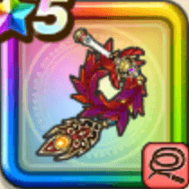

ラーミアのムチ
攻略班 9.5点 / マジックウィップマヌーハラーミアの祝福不死鳥のほむらいきなりピオリムまばゆき翼
くわしい特徴
【レベル別習得スキル】 Lv1【ニンジャ】すばやさ+10 Lv1【大神官】攻撃力+5 Lv10マジックウィップ（消費MP：7）敵全体に威力120%体技ダメージを与え、MPを一定量回復する Lv15マヌーハ（消費MP：7）仲間ひとりの幻惑をなおす Lv20ラーミアの祝福（消費MP：最大MPの15%）味方1人の一部の職業固有特性の発動率を100%上げ、さらに味方全体の受けるスキルのHP回復効果をかなり上げる(戦闘中2回のみ使用可能) Lv30不死鳥のほむら（消費MP：57）敵全体に敵ごとに有効なイオ属性かメラ属性の440%体技ダメージを与え、次に行動する味方1人に限界突破を付与し、スキルダメージと会心率か暴走率をかなり上げる Lv35けもの系へのダメージ+5% Lv40ドラゴン系へのダメージ+5% Lv45攻撃力+12 Lv50いきなりピオリム（消費MP：8）戦闘開始時に仲間全員のすばやさを上げる(効果2ターン) Lv50まばゆき翼（消費MP：最大MPの1%）戦闘開始時に敵全体にたまに衰弱 Lv1を付与する(効果3ターン) 【限界突破スキル】 1凸スキルの斬撃・体技ダメージ+7% 2凸スキルの斬撃・体技ダメージ+7% 3凸スキルの斬撃・体技ダメージ+7% 4凸スキルの斬撃・体技ダメージ+7%